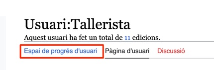

Com editar la Viquipèdia

Regles del joc
Creació de coneixement
vs.
difusió del coneixement
Viquipèdia:No feu treballs inèdits
Autentificar veracitat
vs.
verificar autenticitat
Viquipèdia:Verificabilitat
Objectivitat
vs.
neutralitat
Viquipèdia:Punt de vista neutral
Continguts privatius
vs.
continguts lliures
Viquipèdia:Infraccions de drets d'autor
Referències
Fonts primàries
Font primària
Fonts secundàries
Font secundària
Fonts fiables
Viquipèdia:Fonts fiables
Creació d'un usuari
Ajuda:VideotutorialsCreació d'un usuari
Confirmar email

També rebreu un correu de confirmació.
Espai de progrés d'usuari
Suggeriment d'edicions per nivell de dificultat i tempàtica
Especial:Pàgina d'inici

Impacte

Ajuda

Primera pàgina
Qui som
Especial:Pàgina personal


Ús de plantilles (etiquetes)


Ús de plantilles (etiquetes)
Editant
Plantilla:Editant


Ús de plantilles (etiquetes)
Plantilla Usuari corporatiu
Plantilla:Usuari corporatiu


Ús de plantilles (etiquetes)
Plantilla Usuari corporatiu
Plantilla:Usuari corporatiu
No us eximeix de seguir el principi de neutralitat
Viquipèdia:Punt de vista neutral
No us eximeix d'afegir referències fiables
Viquipèdia:Fonts fiables
Editor visual


Editor visual
Format de text


Exemple negreta

Encapçalaments


Estructura d'un article
Cos article
Etiquetes
Plantilla
Paràgraf inicial
Paràgraf
Seccions
Encapçalament [+ Encapçalament de nivel x]
Estructura d'un article
Altres seccions
Referències
Plantilla Referències
Vegeu també
Enllaços interns Viquipèdia
Bibliografia

Estructura d'un article
Altres seccions
Enllaços externs
Vegeu l'exemple bàsic a
Viquipèdia:Estructura d'un article
Enllaços interns


Enllaços externs


Referències


Referències manuals


Reutilització de referències


Imatges


Com iniciar una pàgina
Pàgina de proves
Especial:Pàgina personal/proves


Com iniciar una pàgina
Fent cerca i clic a l'enllaç vermell
Ajuda:Com iniciar una pàgina

Buscar un model
Llistat d'articles de qualitat
Viquipèdia:Articles de qualitat
Categorització


Afegir categoria més específica
Viquipèdia:Categorització
Preferències
WikiData
Especial:Preferències


Preferències
Nombre d'edicions
Especial:Preferències


Infotaula


WikiData
Viquipèdia


Usuari: persona
WikiData


Usuari: ordinador
WikiData

Mateix login de Viquipèdia
WikiData
Vegeu presentació
Introducció a wikidata
Demaneu ajuda a la taverna
Viquipèdia:La taverna/Ajuda
Commons
Imatges, vídeo i àudio
commons.wikimedia.org


Podeu carregar:
Treballs originals vostres
Treballs que en tingueu permís
Commons:La taverna
Viquipèdia:La taverna/Ajuda
Pujar imatge